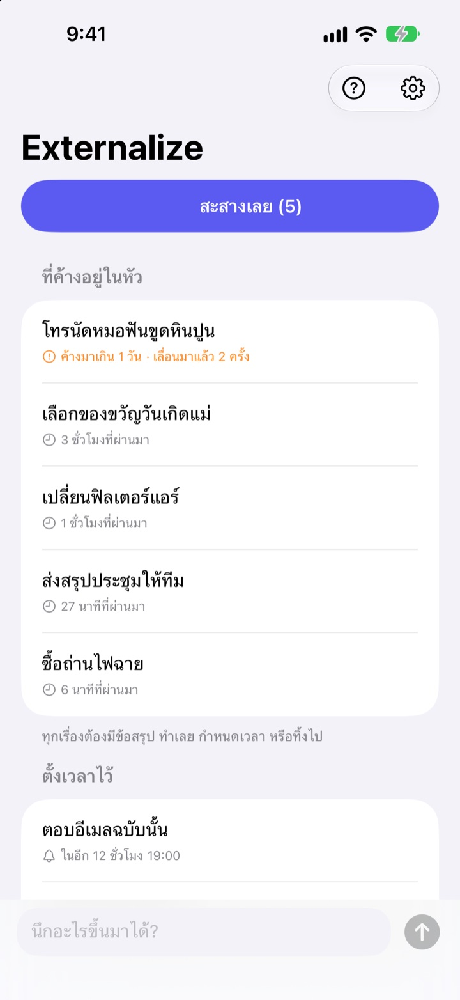
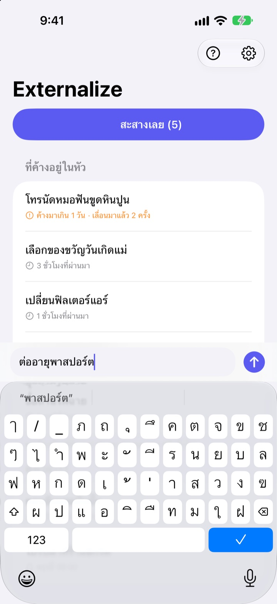
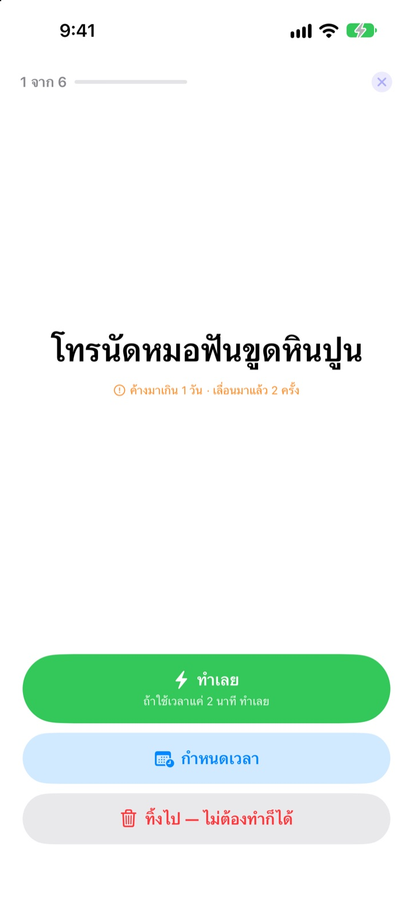
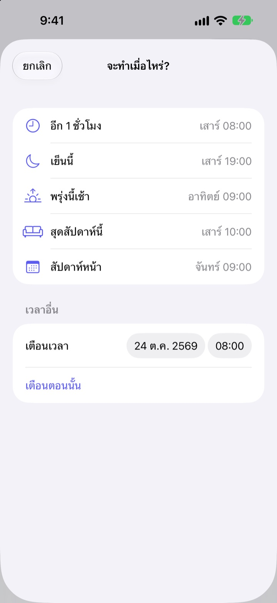

นึกได้ก็จด
ตกเย็นค่อยสะสาง
“อ้อ จริงด้วย ต้องทำอันนั้น…” จดไว้ไม่กี่คำแล้ววางมันลงจากหัว ตกเย็นค่อยสะสางเรื่องที่เหลือทีละเรื่อง
ทุกฟีเจอร์ใช้ฟรี ไม่ต้องสมัครหรือล็อกอิน

ลองเลยตรงนี้
พิมพ์เรื่องที่ค้างอยู่ในหัว หรือแตะตัวอย่าง จากนั้นกด “สะสางเลย” แล้วจบทีละเรื่อง
เรื่องเล็กแค่ไหน ก็กินพื้นที่ในหัว
ตอนอาบน้ำ ตอนติดไฟแดง ตอนกำลังจะหลับ จู่ๆ ก็นึกได้ว่า “ต้องทำอันนั้นนี่” ไม่มีที่ให้จด เลยต้องพยายามจำไว้ แล้วสิ่งที่ทำอยู่ก็เสียสมาธิ แอปจัดการงานยังให้สร้างลิสต์และตั้งกำหนดส่งก่อน แค่จดก็กลายเป็นงานไปแล้ว
จด 3 วินาที แล้วลืมไปได้
เปิดแอปแล้วพิมพ์ในช่องด้านล่างได้ทันที ไม่ต้องเลือกลิสต์ โฟลเดอร์ หรือกำหนดส่ง
แตะวิดเจ็ตบนหน้าจอล็อก แอปจะเปิดมาพร้อมช่องว่างให้พิมพ์ พูดกับ Siri ว่า จำไว้ใน Externalize หรือตั้งไว้ที่ปุ่มแอ็คชั่น ก็บันทึกได้โดยไม่ต้องเปิดแอป

ตกเย็น สะสางทีละเรื่อง
ถ้ายังมีเรื่องค้าง แอปจะเตือนครั้งเดียวตอน 21:00 น. ถ้าเคลียร์หมดแล้วก็ไม่เตือน
เมื่อเริ่มสะสาง แต่ละเรื่องจะขึ้นมาทีละเรื่องแบบตัวใหญ่ เลือก “ทำเลย” “กำหนดเวลา” หรือ “ทิ้งไป” แล้วเรื่องถัดไปจะขึ้นมา ถ้าใช้เวลาแค่สองนาที เปิดตัวจับเวลาแล้วทำให้เสร็จเลย

ไม่มีอะไรถูกทิ้งค้างจนลืม
เลือก “อีก 1 ชั่วโมง” “เย็นนี้” “พรุ่งนี้เช้า” “สุดสัปดาห์นี้” หรือ “สัปดาห์หน้า” แล้วเรื่องนั้นจะกลับมาตามเวลา ในการแจ้งเตือนกด “เสร็จแล้ว” “พรุ่งนี้เช้า” หรือ “ทิ้งไป” ได้ทันที
เรื่องที่ค้างเกินหนึ่งวันและเรื่องที่เลื่อนซ้ำหลายครั้งจะถูกทำเครื่องหมายไว้ เห็นชัดว่าอะไรถูกผัดไปเรื่อยๆ

เริ่มได้ใน 3 ขั้นตอน
- 1
นึกได้ก็จด
พิมพ์ไม่กี่คำในแอป ที่วิดเจ็ตหน้าจอล็อก หรือผ่าน Siri ตามที่สะดวก
- 2
อนุญาตการแจ้งเตือน
แอปจะถามครั้งเดียวตอนจดครั้งแรก ใช้สำหรับแจ้งเตือนตอนเย็นและเวลาที่คุณกำหนด
- 3
ตกเย็นค่อยสะสาง
แตะการแจ้งเตือนหรือ “สะสางเลย” แล้วจบทุกเรื่องที่เหลือ
จัดการจากลิสต์ได้เลย
- แตะที่รายการ
- เลือก “เสร็จแล้ว” “กำหนดเวลา” หรือ “ทิ้งไป”
- ปัดไปทางขวา
- เสร็จแล้ว (หายไปจากลิสต์)
- ปัดไปทางซ้าย
- ทิ้งไป หรือ “เลื่อน” เพื่อกำหนดเวลา
- สะสางเลย
- ไล่จัดการเรื่องที่เหลือทีละเรื่อง
- จำไว้ใน Externalize
- บอก Siri โดยไม่ต้องเปิดแอป
- การตั้งค่า ▸ แจ้งเตือนตอนเย็น
- เปลี่ยนเวลาหรือปิด
เวลากำหนดเวลา “เย็นนี้” คือ 19:00 น. “พรุ่งนี้เช้า” คือ 9:00 น. “สุดสัปดาห์นี้” คือวันเสาร์ 10:00 น. และ “สัปดาห์หน้า” คือวันจันทร์ 9:00 น. หรือจะเลือกวันและเวลาเองก็ได้
คำถามที่พบบ่อย
จดโดยไม่เปิดแอปได้ไหม
ได้ พูดกับ Siri ว่า จำไว้ใน Externalize แล้ว Siri จะถามว่าจะจดอะไร แล้วบันทึกให้เลย ถ้าตั้งคำสั่งลัด “จดไว้” ไว้ที่ปุ่มแอ็คชั่นในการตั้งค่า กดครั้งเดียวก็จดได้
เพิ่มวิดเจ็ตบนหน้าจอล็อกยังไง
แตะหน้าจอล็อกค้างไว้ แตะ กำหนดเอง แล้วเลือกหน้าจอล็อก แตะพื้นที่วิดเจ็ตแล้วเพิ่ม Externalize แตะวิดเจ็ตจะเปิดช่องว่างให้พิมพ์ และบอกด้วยว่าเหลือกี่เรื่อง บนหน้าจอโฮมก็มีวิดเจ็ตขนาดเล็กให้ใช้
อยากเปลี่ยนเวลาหรือปิดแจ้งเตือนตอนเย็น
แตะรูปเฟืองมุมขวาบน ▸ แจ้งเตือนตอนเย็น เพื่อเปลี่ยนเวลาหรือปิด ค่าเริ่มต้นคือ 21:00 น. และวันที่ไม่มีเรื่องค้างจะไม่เตือน
ไม่ได้รับการแจ้งเตือน
ถ้าในการตั้งค่าของ Externalize บอกว่าการแจ้งเตือนปิดอยู่ ให้แตะปุ่มตรงนั้นเพื่อไปเปิดในการตั้งค่าของ iPhone ส่วนวันที่ไม่มีเรื่องค้าง การไม่มีแจ้งเตือนตอนเย็นถือเป็นเรื่องปกติ
เรื่องที่กำหนดเวลาไว้จะกลับมายังไง
จะมีการแจ้งเตือนตามเวลาที่เลือก แตะค้างที่การแจ้งเตือนเพื่อเลือก “เสร็จแล้ว” “พรุ่งนี้เช้า” หรือ “ทิ้งไป” ได้เลย ถ้าไม่เลือกอะไร เรื่องนั้นจะกลับไปอยู่ใน “ที่ค้างอยู่ในหัว” แล้วค่อยจัดการรอบหน้า
เรื่องที่กดเสร็จแล้วหรือทิ้งไป เอากลับมาได้ไหม
ไม่ได้ เรื่องที่จบแล้วจะหายไปจากลิสต์และไม่มีที่เก็บถาวร ถ้ายังไม่แน่ใจ ให้กำหนดเวลาไว้ก่อนแทนการทิ้ง
เปลี่ยนเครื่องแล้วข้อมูลจะย้ายไปด้วยไหม
ไม่ย้าย ทุกอย่างเก็บอยู่ในอุปกรณ์นี้เท่านั้น ไม่ส่งไป iCloud หรือเซิร์ฟเวอร์ ถ้าลบแอป ข้อมูลก็จะถูกลบไปด้วย
ใช้กับอุปกรณ์ไหนได้บ้าง
iPhone ที่ใช้ iOS 17 ขึ้นไป
มีคำถามหรือเจอข้อผิดพลาด ส่งอีเมลมาที่ mizzking75@gmail.com ได้เลย ถ้าบอกรุ่น iPhone และเวอร์ชัน iOS มาด้วย จะช่วยให้ตรวจสอบได้เร็วขึ้น